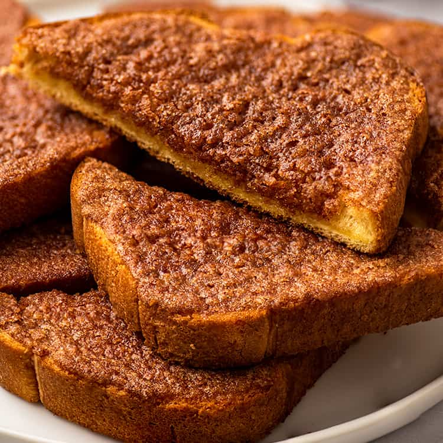

Cinnamon Toast

Description
Yummy cinnamon toast makes a great breakfast or snack!
Ingredients
- 2 slices white bread
- 2 teaspoons butter or margarine
- 2 tablespoons white sugar
- 1 teaspoon ground cinnamon
Steps
- Toast bread slices in a toaster to desired darkness.
- Spread butter or margarine onto one side of each slice.
- Stir together sugar and cinnamon in a small bowl.
- Sprinkle cinnamon-sugar mixture generously over hot, buttered toast.